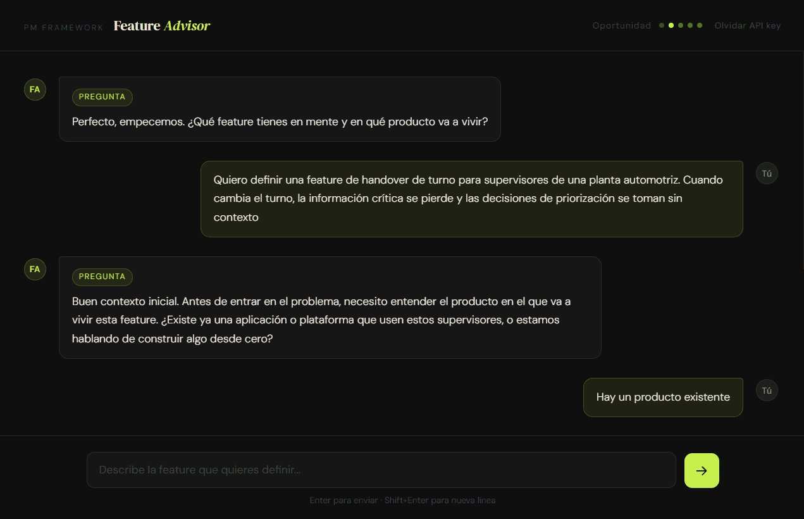

Feature Advisor · Agentic tool
A conversational AI agent that questions the feature brief before the team commits to building it

Feature Advisor is a conversational AI agent that helps product teams think through a feature before committing to it. You describe what you want to build, and the agent asks the questions your team probably hasn’t asked yet: what behaviour changes, what the real risk is, what would prove this wrong. It ends with a downloadable brief everyone can align around.
What problem does it solve?
AI makes it cheaper to ship, but shipping the wrong thing is not cheap at all.
As output becomes faster to produce, the space for strategic definition gets smaller. Teams ship more iterations with less clarity, and the cost shows up later: in launches that can’t be measured, in roadmap items disconnected from business objectives, and in features that don’t target a real change in user behaviour.
Building without clarity burns focus, erodes product knowledge, and distances the team from their users.
Feature Advisor creates that clarity upfront. The agent guides a conversation, evaluates the reasoning in real time, flags inconsistencies, and proposes outcomes, experiments and metrics the team hadn’t considered. It doesn’t fill in a form. It thinks alongside whoever is defining the feature.
How it works?
The agent runs as a fully conversational interface.
The user describes a feature in natural language. From there, Claude navigates five phases: context, opportunity, risks, validation, and brief. It makes one proposal at a time, evaluates each response against the frameworks it carries (Cagan, Torres, Seiden, Fitzpatrick, Singer, Maurya, Lean Analytics), and surfaces problems as they appear.
If an outcome describes a feature delivered instead of a behaviour changed, it says so before moving on. If a benchmark has no market basis, it flags it.
At the end, it synthesises everything into a downloadable Feature Brief.
Who it’s for?
Product Owners, Product Managers, Product Designers, and anyone on a product team who needs to frame a problem before committing to a solution. People who know what a good brief looks like and want a faster way to get there, and to surface where the gaps are before they become expensive.
It also functions as a team alignment tool: filling in the brief together makes visible where there’s agreement and where there are blind spots.
How I built it?
I started by uploading seven product frameworks to NotebookLM to extract and distill the core concepts from each author. Those summaries became the knowledge base the tool needed to reason from, and eventually the foundation of the system prompt itself: a hidden instruction set that defines how the model evaluates every response it receives, what makes a hypothesis valid, what makes an assumption falseable, when to propose and when to push back.
That’s what turns a structured conversation into an agent that reasons.
With the prompt defined, I integrated the Anthropic API through Claude Code and deployed on Vercel. The conversation history is passed with every API call so the agent maintains full context across the session, and each response returns a typed JSON object with the current phase, message, optional quick-reply chips, and an incrementally updated brief that renders live.
What I learned
A knowledge base only works when it becomes criteria.
I assumed that feeding the model rich, structured content from seven frameworks would be enough for it to reason correctly. What I learned is that a model without evaluation criteria is just pattern-matching. The system prompt is where the thinking happens, not the training data you give it.
Agentic design is prompt architecture
Building this felt less like UI design and more like writing a spec: precise enough that the model knows what good looks like, flexible enough to handle what you didn’t anticipate. The interface is almost irrelevant. The real product is what the model knows, and how it’s been told to use it.